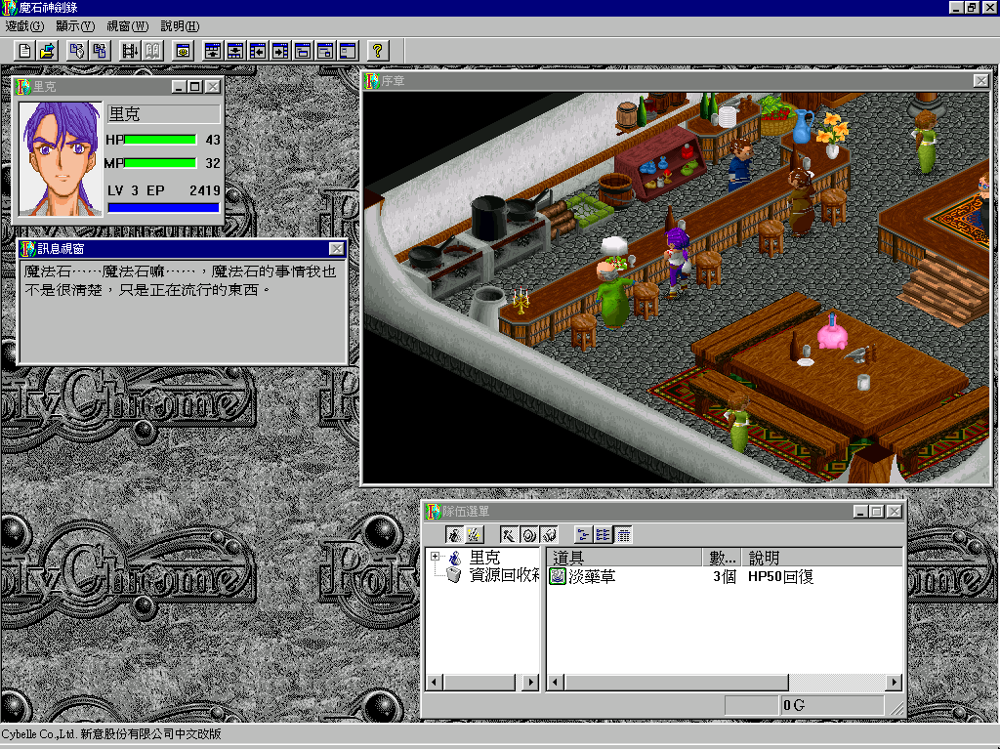
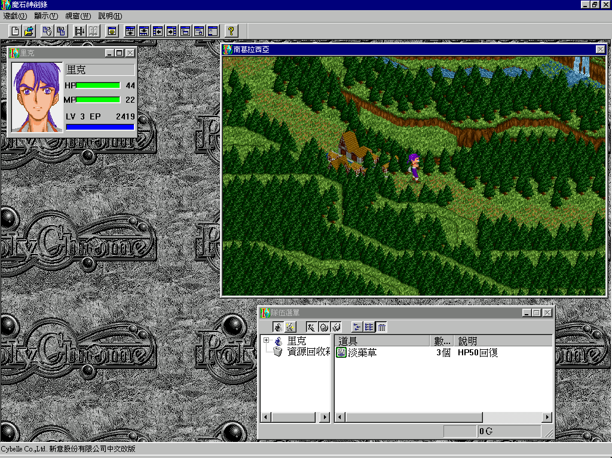
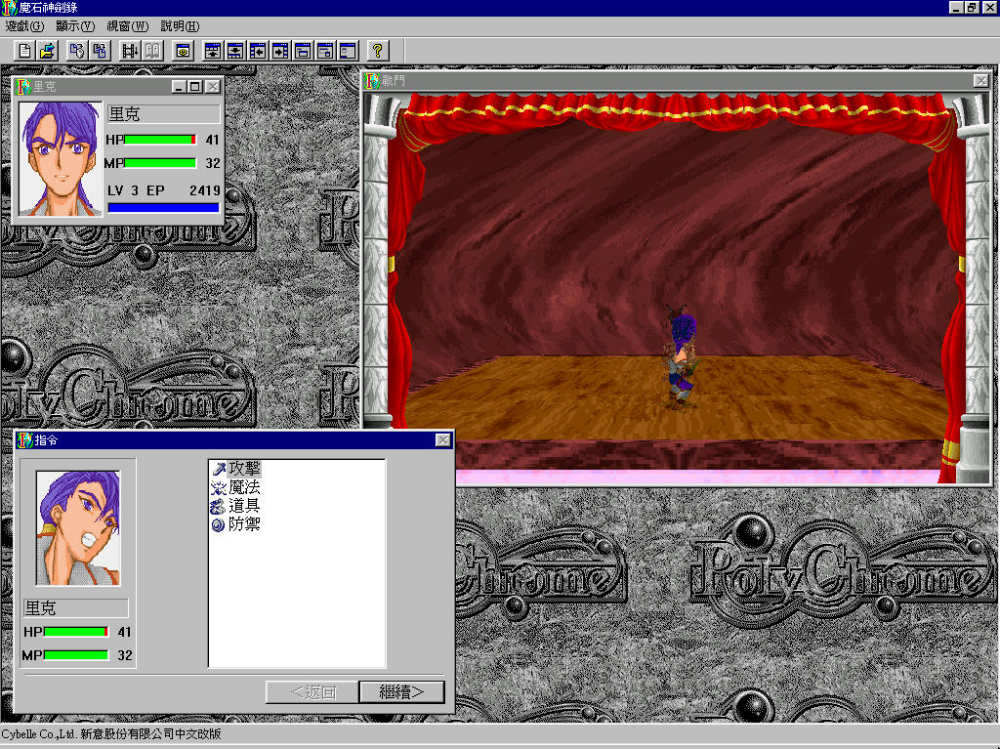

名稱：魔石神劍錄 (Poly Chrome，中文版)
簡介：Cybelle 1996年出品的角色扮演遊戲，1997年由新意中文化並代理發行，以3D斜角畫
面呈現，採團隊回合制方式戰鬥 [待補]。



保護：光碟，破解碼：
PCHROME.EXE
85 C0 75 15 6A 00
-- -- EB -- -- --
備註：中文版為1.01版。
備註：XP以上系統執行時，需設定PCHROME.EXE為Win9x相容，否則會檢測不到光碟。
備註：安裝後啟動若出現RunTime Error，請重開機後再執行看看。
備註：以下為各系統的執行狀況：
1.VirtualBox或VMware+XP：無法觸發劇情而卡死、部份文字亂碼。
2.VMware+Win98：無法觸發劇情而卡死。
3.Win64：無法觸發劇情而卡死。
4.86Box 3.11+Win98：可正常執行，但結束遊戲時可能會當機。
4.PCemV17+Win95：一切正常。